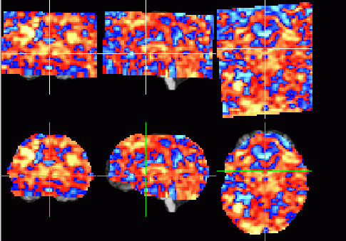

vbrainmask -in zmap.v -raw ntbsm.v -minval 2000 -out zmap_new.v
This program call does the following:
the raw data are thresholded using 2000 as threshold. The resulting
mask is cleaned along its borders and then applied to the zmap.
The raw data file must have the same geometrical properties as the zmap.
In particular, it must have been transformed into AC/PC space, if the zmap
is in AC/PC space. The image below illustrates the process.
